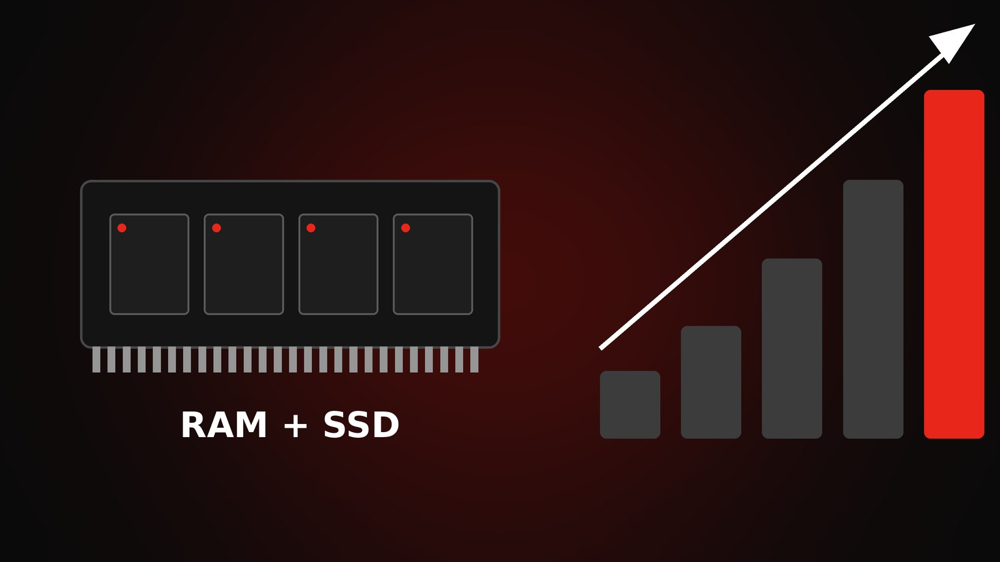
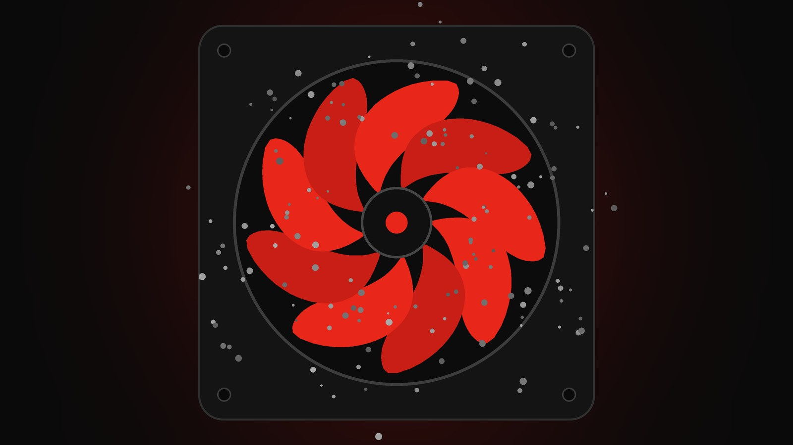

Consejos de computación, sin vueltas
Mantenimiento, hardware, seguridad y trucos para que tu equipo ande mejor y te dure más.

Por qué la memoria y los SSD están tan caros: el efecto de la IA
La demanda de inteligencia artificial encarece la RAM y los SSD. Qué pasa y qué hacer si vas a comprar.

5 señales de que tu PC necesita mantenimiento
Ruidos, lentitud y temperatura: cómo detectar a tiempo lo que le pasa a tu equipo.

SSD o disco rígido: cuál te conviene
Qué dicen los datos de confiabilidad y precio para elegir bien.